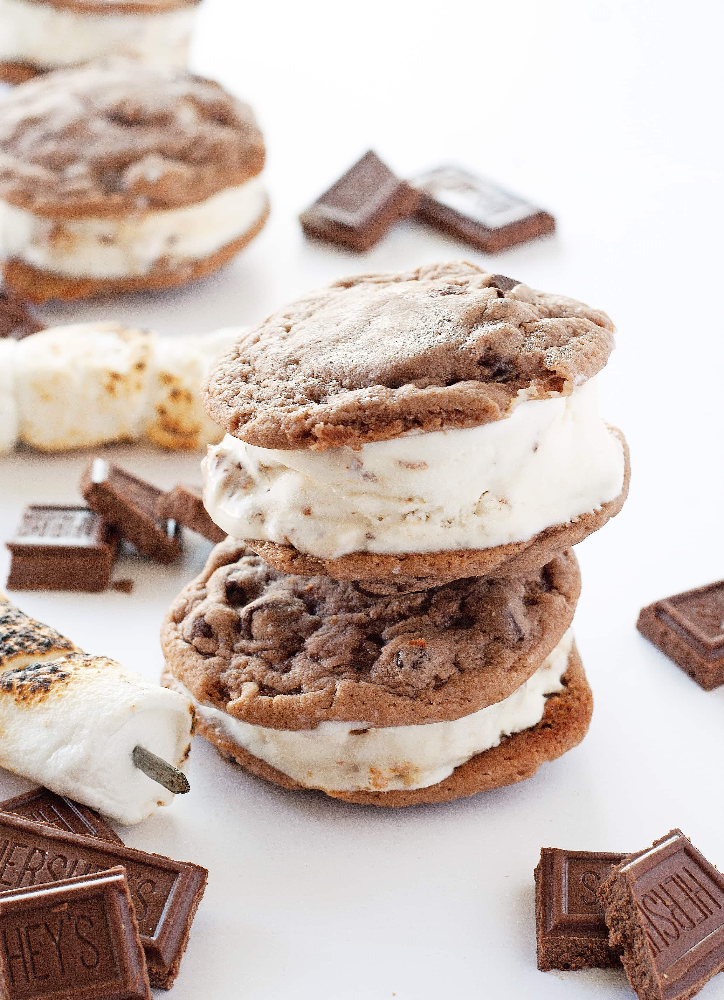

Ice Cream

The introduction to ice cream is unclear. No one really knows who invented ice cream. We have bits and pieces of information. It’s enough to put together a basic story, but we don’t have all of the answers. In Ancient Rome, Emperor Nero enjoyed mixing snow with fruit and honey. He frequently sent messengers out to gather snow from the mountains. Some historians credit Marco Polo with being the first one to bring some type of ice cream to Europe. He had learned it from the Chinese, who had flavored snow with rice and milk to make a creamy dessert. From there, it progressed. Eventually, ice cream recipes reached the United States a few centuries after Christopher Columbus landed on American soil.
Cherry Cheesecake

The largest cheesecake ever made weighed in at a colossal 6,900 pounds. Created by the Philadelphia Cream Cheese in Lowville, New York the cheesecake was made using Philadelphia ready to serve cheese filling over a large graham cracker crust. It measured 7 feet 6.25 inches in diameter and was 2 feet 7 inches tall and was unveiled at the Lowville Cream Cheese Festival on 21 Sept 2013.
Crepe
Crepe is a type of very thin pancake. Crêpes are usually of two types: sweet crêpes (crêpes sucrées) and savoury galettes (crêpes salées). Crêpes are served with a variety of fillings, from the simplest with only sugar to flambéed crêpes Suzette or elaborate savoury galettes. While crêpes are often associated with Brittany, a region in the northwest of France, their consumption is widespread in France, Belgium, Canada, and many parts of Europe, North Africa, Lebanon, and the Southern Cone of South America.
Family
| Name | Birth Year | Sex |
| Jacob | 1993 | M |
Marian | 1988 | F |
| Oliver | 2014 | M |
| Bradley | 2018 | M |